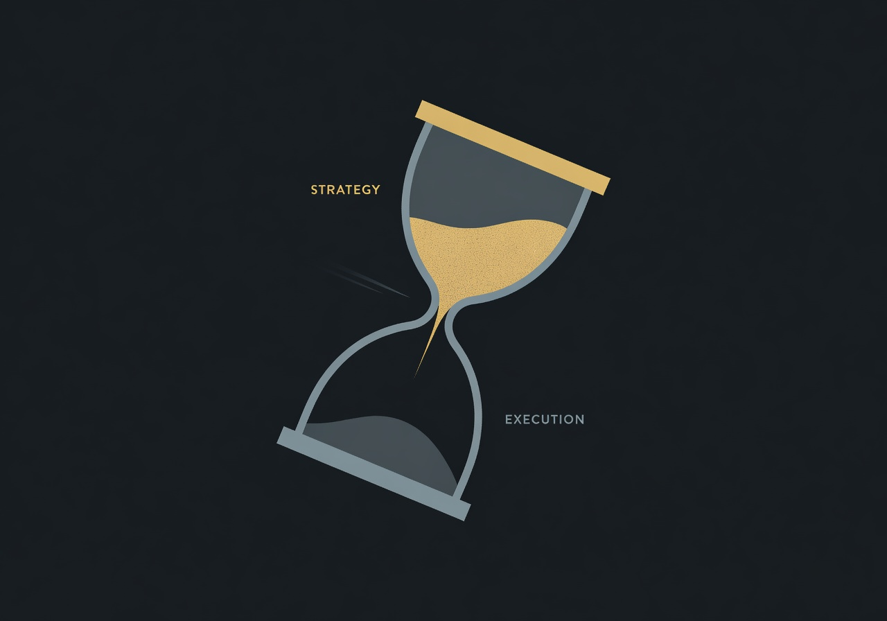
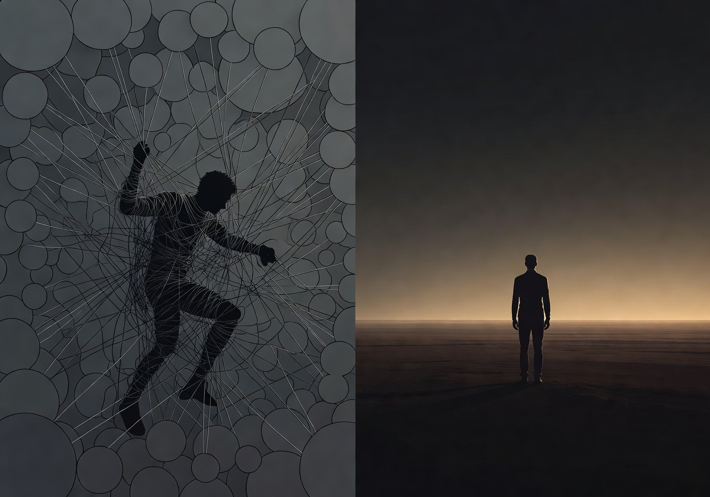

The Golden Age of Product Management
Product management is dead. Long live product management.
Welcome to the golden age of the PM. Not the golden age of product ownership, tickets, refinement, or scrum. Not the golden age of ceremonies and sprint artifacts and documents and dashboards. No, that simulacrum is dead on arrival. Marty Cagan does not mince words: product owners are “sitting ducks” for AI. He’s encouraging every product owner he knows to upskill fast. He’s right. 80%+ of what a traditional product owner does — writing user stories, estimating complexity, monitoring burn-downs, running standups and retros — is history. And if that describes what you do and the “value” you provide, you need to hear this clearly: the clock is running out.
But here’s what the doomsayers miss. The elimination of the product owner is not the death of product management. It is its liberation. Cagan calls this “The Era of the Product Creator.” And he’s not talking about a distant future. He says the new generation of AI tools is empowering a much broader set of people to step into the role of passionate, visionary product leaders — and that this represents a fundamental shift.
The Cost of Building Has Collapsed. The Cost of Being Wrong Has Not.
The single most consequential fact in technology right now is that software is free to build. Sam Altman describes it as “intelligence too cheap to meter,” and he’s not speaking theoretically. The cost per unit of AI intelligence has dropped by more than 10x every year for five years running. The data is unambiguous. By the end of 2026, Altman predicts an individual spending $1,000 on inference will complete software that would have previously required an entire team. His prediction for the decade: “Anyone in 2035 should be able to marshal the intellectual capacity equivalent to everyone in 2025.”
The numbers on the ground confirm it. Garry Tan, president of Y Combinator, reports that for a quarter of the current YC batch, 95% of the code was written by AI. You don’t need a team of 50 or 100 engineers anymore. Amjad Masad, CEO of Replit, tells the story of a customer who built an ERP automation for $400 that a vendor quoted at $150,000. Andrew Ng, the man who built Google Brain, says he and his colleagues now build on a weekend what used to take six engineers three months. Dario Amodei, the CEO of Anthropic, says engineers inside his own company don’t write any code anymore. The models do software engineering end to end.
The constraint that defined software development for fifty years, the scarcity of engineering time, is gone. Obliterated. The dam has burst. Every product organization on Earth was designed around this constraint. The entire apparatus of product management — roadmaps, prioritization frameworks, sprint planning, MVP scoping — exists because building was expensive.
That world is gone.

When building is nearly free, the strategic calculus inverts completely. The risk is no longer that you build too much. The risk is that you build too little. You build the wrong thing. The risk is that you aim too low, scope too conservatively, and waste the most transformative moment in the history of software on incremental improvements that don’t move the needle. Your old MVP? That janky version of your vision that took months to fund and build? That’s a prototype now. Takes 10 minutes.
The new MVP is the fully realized product, because building is fast and code is cheap. Scope is no longer something you cut. It’s something you sequence — foundation, expansion, polish — and you ship all of it.
You boil the ocean.
What Product Management Was. What It Actually Is.
For two decades, Scrum and Agile bastardized product management into something it was never supposed to be. They turned the product manager into a human router. You were the glue person. The intermediary who made sure marketing talked to sales and engineering talked to design. You translated requirements from one group to another. You managed the backlog. You were an orchestration layer (and tbh the average PM was not that great of one either).
That orchestration layer is now agentic. Andrej Karpathy, the man who ran Tesla’s AI, named the paradigm shift earlier this year. He calls it “agentic engineering”: the new default is that you are not writing the code directly 99% of the time. You are orchestrating agents who do, and acting as oversight. He says vibe coding will “terraform software and alter job descriptions.” He’s right. And it’s not just software engineering being terraformed. It’s every process-oriented role in the building chain.
The knowledge and communication that used to require a human in the room is now artifact-driven — persistent, structured, living context that travels between teams and between AI agents without losing fidelity. The context that used to live in a product manager’s head now lives in systems that don’t forget, don’t get tired, and don’t lose the thread between Monday’s standup and Thursday’s design review.
So what remains? What is the job when the tactical, the administrative, and the orchestration are handled by machines?
What remains is the hardest, most valuable thing in business: the ability to see what no one else sees and have the conviction to go build it. The job is zero to one to scale. It’s outcomes. It’s ARR and gross margin, it’s quality and CSAT, it’s finding and fortifying the moat. It always has been, but now it’s nothing else.

Every Product Manager Is a Founder
This is the thesis. Not metaphorically. Not aspirationally. Literally.
Sam Altman put it best: “For a long time, technical people in the startup industry have made fun of ‘the idea guys’ — people who had an idea and were looking for a team to build it. It now looks to me like they are about to have their day in the sun.” He’s betting on the first one-person billion-dollar company. Marc Andreessen says the endgame is “entire companies where the founder oversees an army of AI bots.”
The role of the product manager has elevated to what it was always supposed to be. You are an entrepreneur. Your job is not to manage a backlog. Your job is not to represent the customer to the engineers. Your job is damn sure not writing tickets. Your job is to find the strategic insight that drives revenue, market share, and competitive dominance — and then to point the entire machine at it. Your job is results.
Andrew Ng sees the shift already in motion. For the first time in his career, one of his teams proposed a headcount plan with twice as many product managers as engineers. The bottleneck has moved. It’s no longer “can we build it?” It’s “do we know what to build, and are we being ambitious enough about it?” Lenny Rachitsky says it directly: “Product managers are the best-positioned role in tech to thrive in a world of AI.” He goes further: “In fact, many jobs will start to look more like product management.” The most valued skill set is shifting from building to knowing what to build, giving clear instructions for what to build, and having the taste to know if what you’ve created is great.
Shreyas Doshi, who built products at Stripe, Twitter, and Google, argues that the only lasting moat is what he calls Product Sense — deep empathy, strategic thinking, great taste, and the ability to simulate outcomes before they happen. Tools have never been a significant source of competitive advantage in product success, he says. That doesn’t change with AI tools. What changes is that the people with Product Sense now have leverage that was previously unimaginable.
This is the golden age because the people who were always doing the real work of product management, the deep discovery, the strategic positioning, the market insight, the creative leaps, those people just got handed a superpower. Cagan himself says it: “For those that really know what product discovery is, this is an amazing era. It has never been better.”
Boil the Ocean
Here is what changes in practice. Stop optimizing for what you can cut. Start optimizing for how ambitious you can be from day one.
Tobi Lütke, CEO of Shopify, wrote an internal memo that went public this year. He described watching his best people tackle “implausible tasks, ones we wouldn’t even have chosen to tackle before,” with AI — and getting 100x the output. He now requires any manager requesting new headcount to first prove that AI cannot do the job. That’s not cost-cutting. That’s a recognition that the ceiling on what a small team can accomplish has been utterly and completely redefined.
Discovery should be exhaustive, not expedient. Talk to every customer. Pull every dataset. Prototype relentlessly. Stress-test every assumption. Model the business case. This is not waterfall. This is shifting left. This is going so deep into the problem space that when you point the machine at it, the machine has perfect clarity on where to go.
The artifacts you produce — the press releases, the FAQs, the API designs, the PRDs, the one-pagers, the product reviews — these are not bureaucratic overhead. They are persistent memory. They are how accumulated intelligence survives context rot in a world where AI agents process your strategy. Every artifact serves a specific audience, human and machine, across the entire organization. Every artifact compounds the knowledge that came before it. And every artifact can be regenerated, iterated, and stress-tested at near-zero cost.
The pipeline is cheap. Run it often. Run it on different inputs. Compare the outputs. Be relentless. The old excuse — “we don’t have time to think that deeply” — is dead. We have effectively infinite resources at the CLI. Everything is now parallel by default. The only question is whether you have the ambition to use it.
The Call to Arms
Every team is a startup right now. Every product manager, whether you sit inside a five-person company or a five-thousand-person enterprise, has the same opportunity that the best founders of previous generations had. The tools to build are essentially free. The agents to execute are getting better by the month. The orchestration layer that used to require an army of coordinators is automated.
What is not automated — what cannot be automated — is the vision. The conviction. The ability to look at a market, see the right move, and then GO. The courage to define scope that is appropriately ambitious rather than defensively minimal. The judgment to know where your team is uniquely positioned to win and the will to go all the way.
You are the coach and the general manager. The agents are the players. But a team without a strategy is just a collection of talented individuals running in different directions. Your job is to drive and direct; to ramp up the ambition, to align with the customer, the market, and with what makes your team dangerous.
Hierarchies are flattening. Gatekeeping is dissolving. It doesn’t matter if you carry the title of product manager, head of design, or principal engineer. What matters is whether you can see the strategic insight and drive the machine toward it. This role has never been about the title. It’s about the function. And right now, that function — the founder function, the entrepreneur function — is the single most valuable thing in any organization. What matters is the results.
This is not the future of product management. This is product management. The product managers who understand this will define the next decade of technology. The ones who don’t will be replaced by the ones who do (and their robots).
Boil the ocean. The water’s already hot.